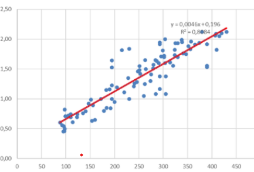
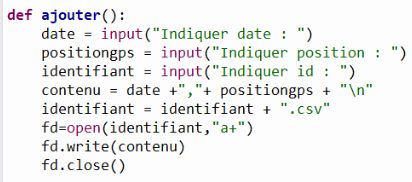

Mes Réalisations
Automatisation d'un site web en fichier excel
Outil : Excel (VBA) & SQL
- Connexion à une base de données
- Ajout/Suppressions des interventions dans la base de données
-Reproduire le même visuel que sur le web
- Filtrer les interventions selon certaines conditions

Analyse d'une chaîne Twitch
Outil : Excel
Cliquez pour voir l'analyse complète (graphique,évolution de la chaine)...

Régression sur les Coraux
Outil : Statistiques descriptives
Cliquez pour voir les détails du modèle de régression et l'analyse de corrélation...

Gestion de Drones
Outil : Python
Cliquez pour voir l'implémentation du code Python et la gestion des fichiers CSV...
